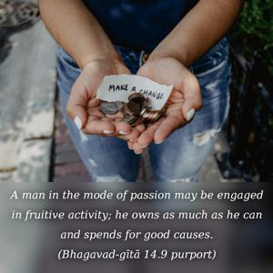
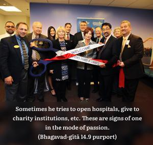

O son of Bharata, the mode of goodness conditions one to happiness; passion conditions one to fruitive action; and ignorance, covering one’s knowledge, binds one to madness.


A person in the mode of goodness is satisfied by his work or intellectual pursuit, just as a philosopher, scientist or educator may be engaged in a particular field of knowledge and may be satisfied in that way. A man in the mode of passion may be engaged in fruitive activity; he owns as much as he can and spends for good causes. Sometimes he tries to open hospitals, give to charity institutions, etc. These are signs of one in the mode of passion. And the mode of ignorance covers knowledge. In the mode of ignorance, whatever one does is good neither for him nor for anyone.